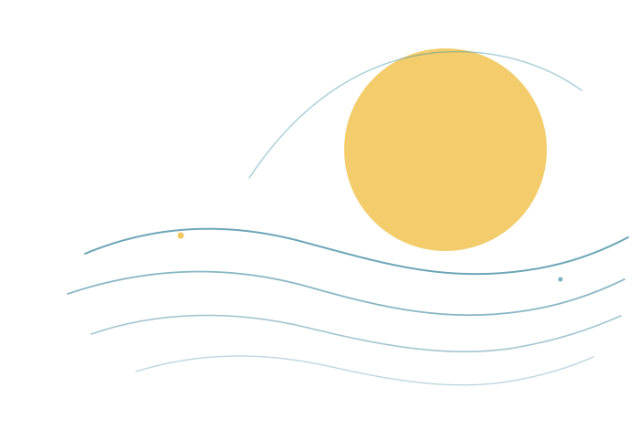

Das mache ich auch privat: Ich betreibe eigene Anwendungen im Heimnetz und baue mir ein persönliches Wissenssystem. Es verknüpft Quellen und Notizen, damit ich Gelerntes langfristig wiederfinde. Mit Lernkarten prüfe ich, was hängen bleibt und wo ich nacharbeiten sollte; daraus entwickle ich das System weiter.
Hi, ich bin Jannis.
Ich studiere Informatik und arbeite seit knapp drei Jahren neben dem Studium – zuerst in der Softwareentwicklung, inzwischen im AI Engineering. Die Verantwortung, die ich dabei übernehmen kann, schätze ich sehr.
Mich in neue Themen einzuarbeiten und Lösungen für konkrete Probleme zu finden, macht mir Spaß.
